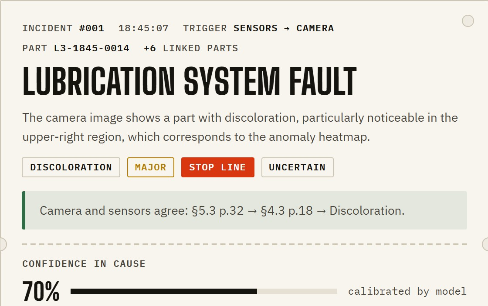
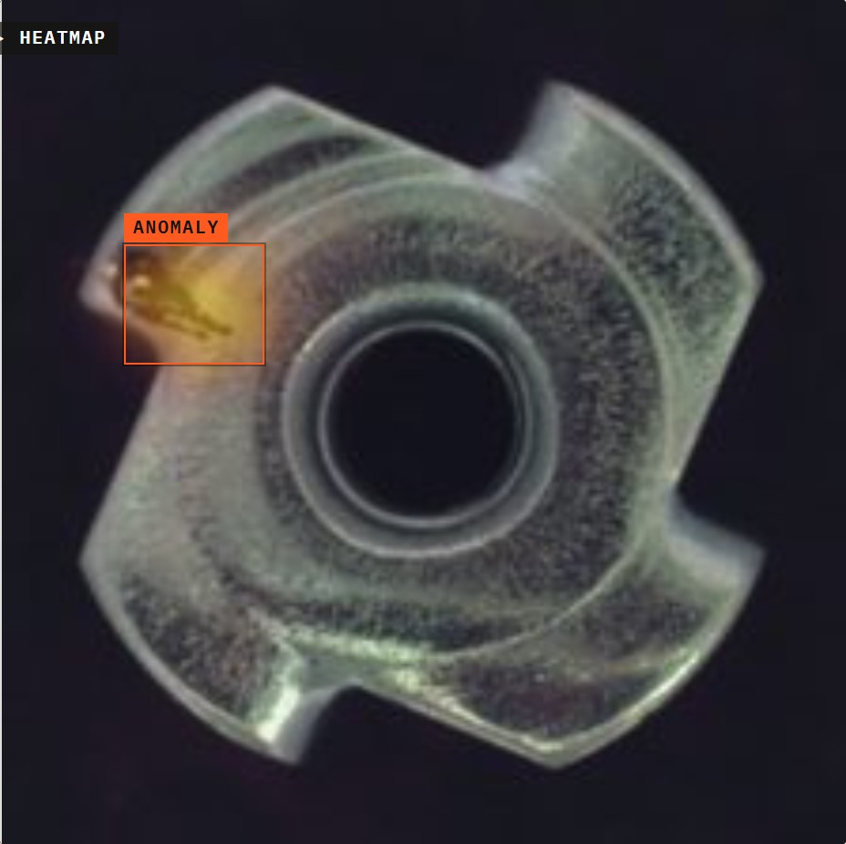
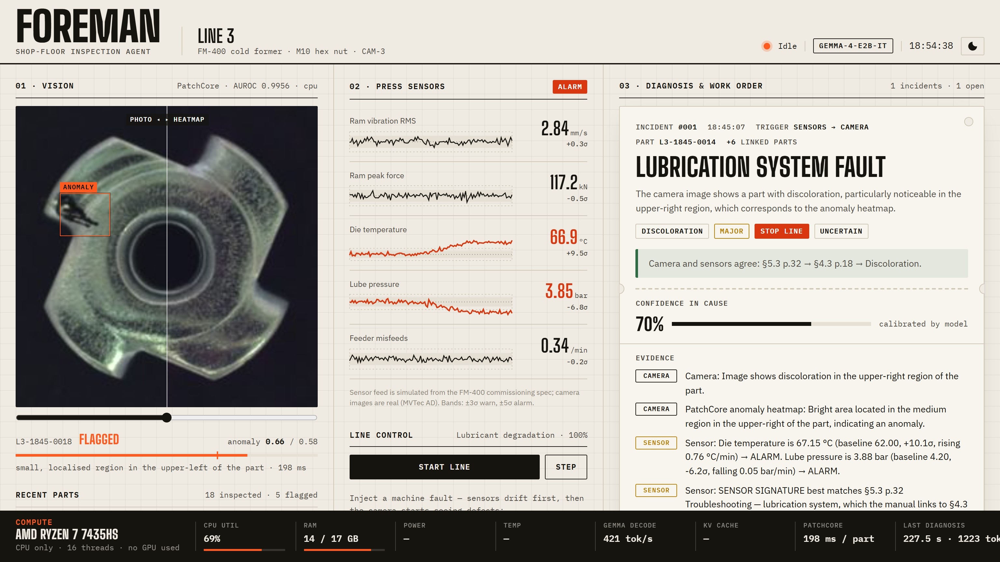
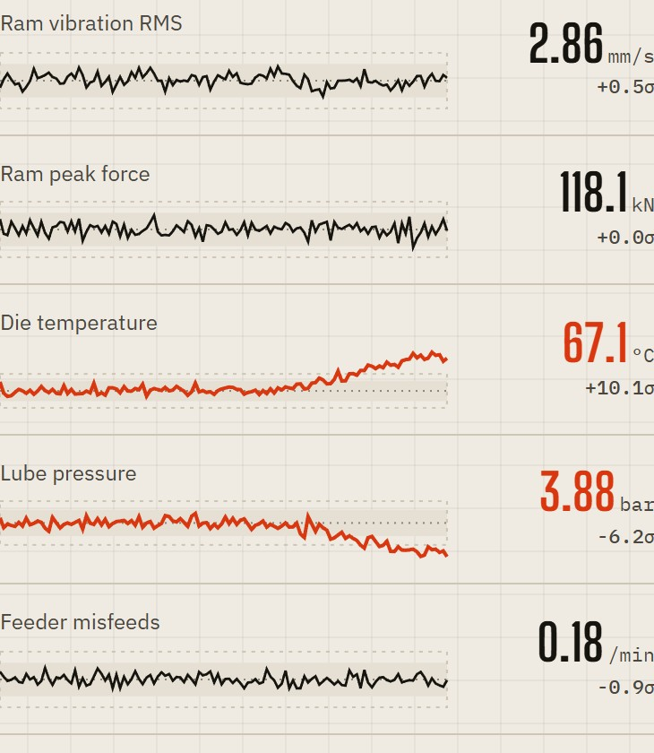
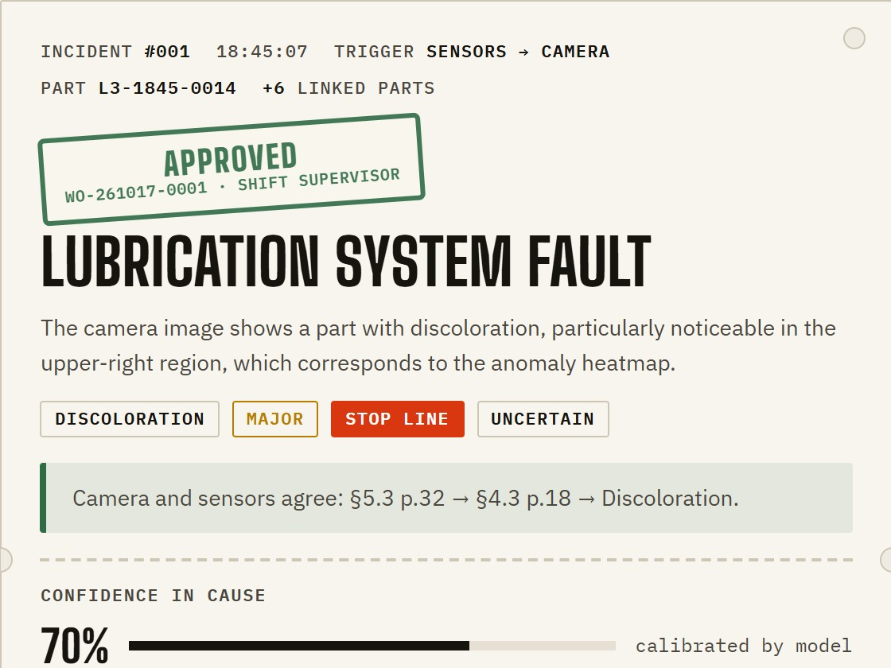
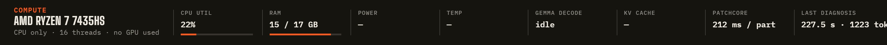

A shop-floor inspection agent. PatchCore finds the defect, Gemma 4 explains why, the machine manual says how to fix it, and a supervisor signs off.


Bad parts keep coming off the line until someone notices.
A technician still has to work out why. The answer is in a thick manual and in senior technicians' heads.
Vision systems say "bad part", not why. And cloud AI can't see a camera feed that has to stay in the plant.

This is the live app during the lubricant fault, with Gemma 4 E2B running CPU-only on the AMD Ryzen.
The camera flags a discoloured nut, the heatmap boxes the stain, and Gemma names a lubrication system fault.
Foreman's own check confirms camera and sensors agree: manual §5.3 → §4.3.
Lubricant degrades. The parts still look fine.
Die temperature up, lube pressure down. Foreman opens an incident from the sensors alone.
The camera sees discoloration. The same incident is re-diagnosed with the photo.
Filter change per the manual. The sensor traces return to baseline.



| Measure | AMD Ryzen (CPU) | RTX 4050 (dev) |
|---|---|---|
| False alarms on good parts | 0 % | same model |
| Recall: bent / color / flip / scratch | 96/96/100/78 % | same model |
| PatchCore latency per part | 184 ms | — |
| Gemma 4 E2B full diagnosis (median) | 2.8 min | ≈ 18 s |
| Live eval: right defect + § cited (4 faults) | 12 / 12 | 12 / 12 |
| Repair matches the manual | 9 / 12 | — |
| Automated tests | 34 | — |
The 3 repairs that missed were flagged by Foreman's own checks. Small sample: 3 images per fault.
Any manual in the section format. Cross-references are followed, citations stay checked.
Swap the simulator for the plant's historian or an OPC UA feed.
Approved work orders go straight into the maintenance system, with the evidence attached.